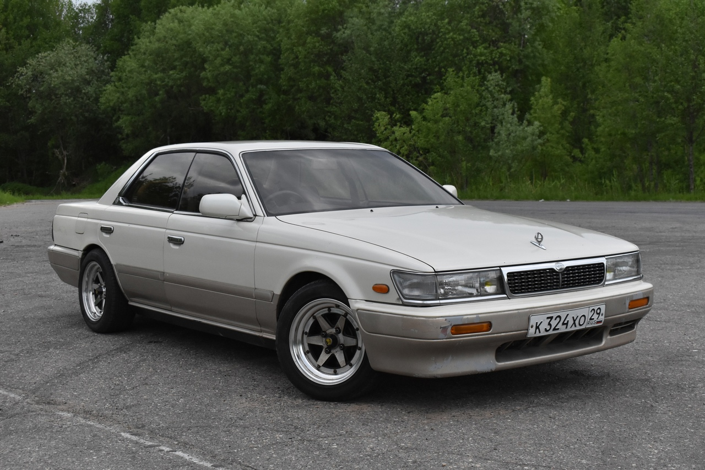

Лаурель c33 был первым, который стал известным на весь мир
Внешний вид
Рассмотрим его на примере:
(Нажми на эту пикчу, чтобы открыть галерею)
Nissan Laurel (яп. 日産・ローレル) — автомобиль бизнес-класса, выпускавшийся компанией Nissan с 1968 по 2003 годы. Он был представлен публике в 1968 как новая модель, которая заняла нишу между Nissan Bluebird 510 и Nissan Cedric 130.
Снаружи схожь с чемоданом:3
Внутри схож с диваном
Технические состовляющие
| Характеристика | Значение |
|---|---|
| Двигатель | Сария RB |
| Подвеска | Макферсон и многорычажка |
| Расход | Большой |
| Прозвище | Лаурь |